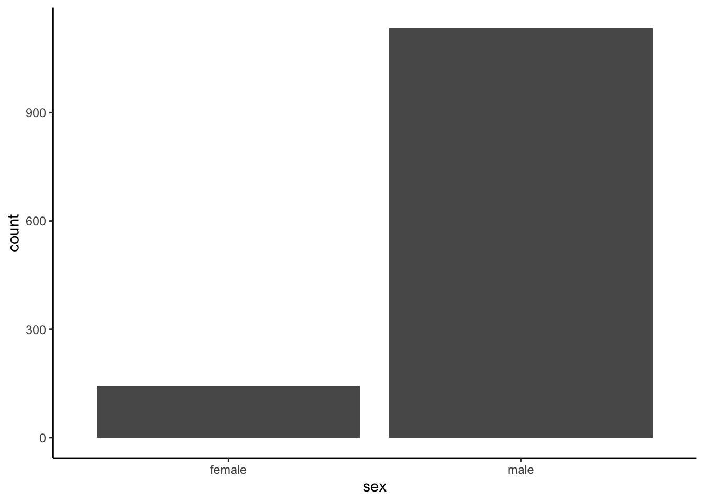
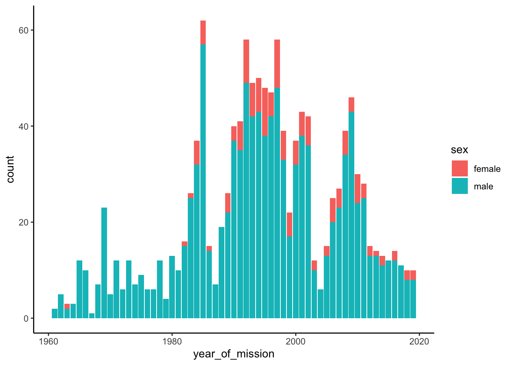
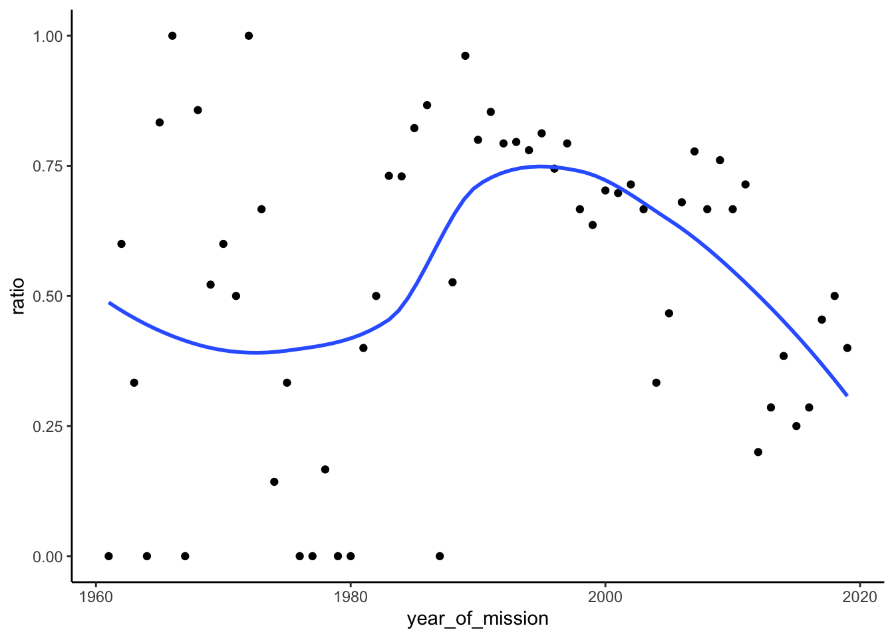
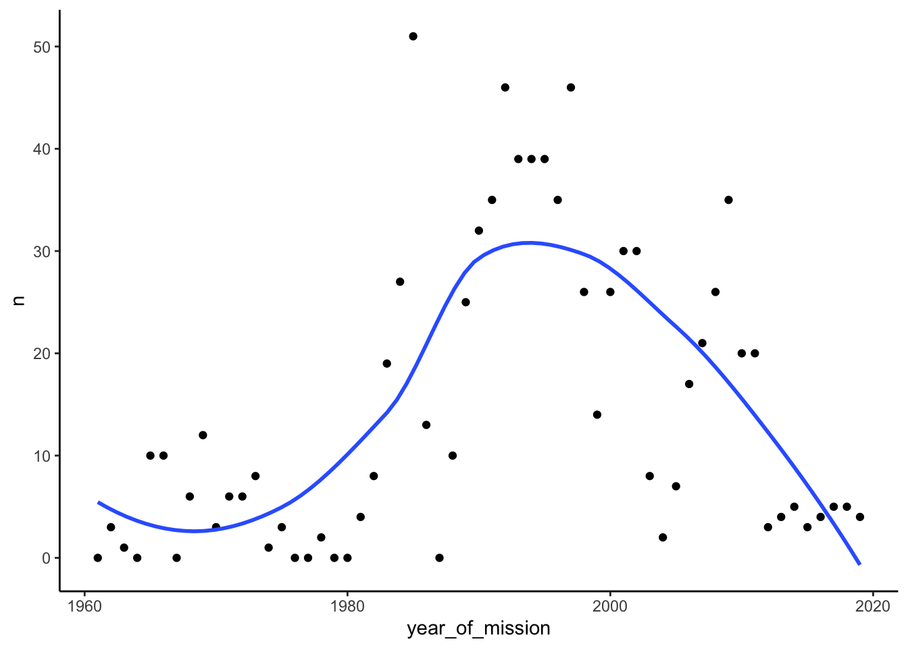
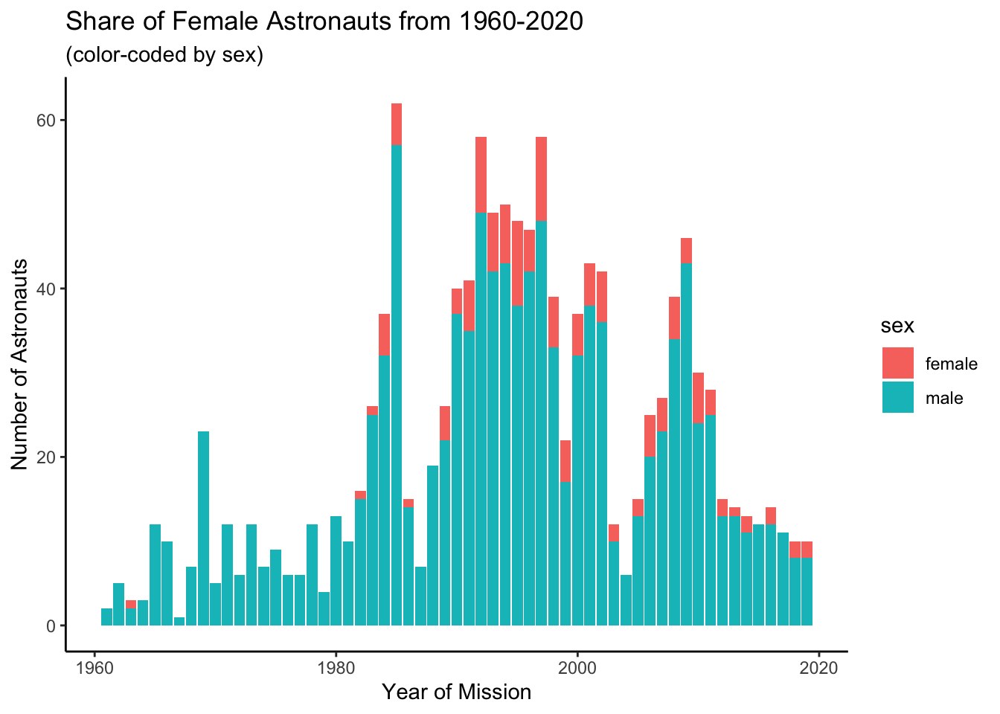
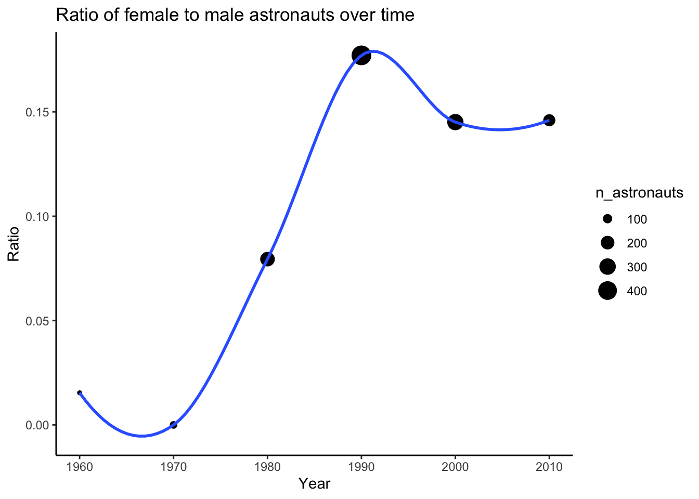
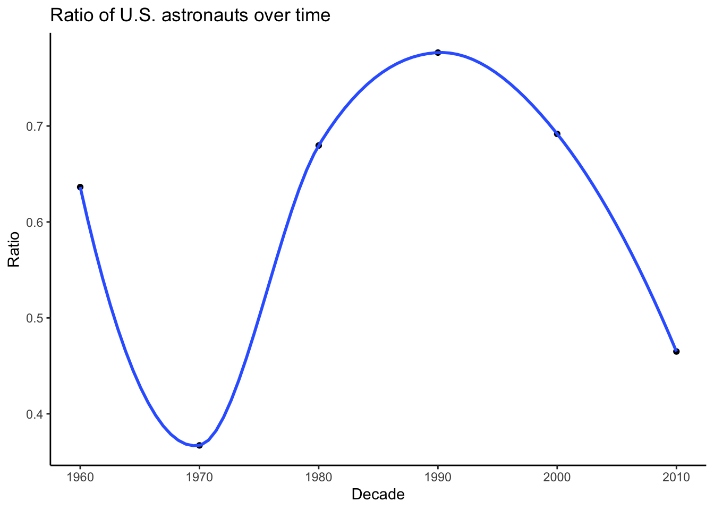

I live in Orlando Florida, which is less than an hour away from Cape Canaveral. As you might imagine, visiting the space center and watching launches is a “thing” we Orlando folks do fairly often.
Me. A long time ago. Pretending to be too close to a launch by posing in front of a photo framed at the Kennedy Space Center. Meta.
I’ve also been getting into R and data science recently via Garrett Grolemund and Hadley Wickham’s excellent R for Data Science. To apply the things I’m learning, I thought it’d be fun to analyze this week’s Tidy Tuesday astronauts dataset.
I’ll follow the analysis process suggested by R for Data Science:
Import/Tidy
Explore (via Transforming, Visualizing, and Modeling the data)
Repeat exploration loop.
Communicate results.
If you’re not interested in the journey, you can skip to the results. The graphs are cleaner and there’s no code to clutter things.
Each row is an astronaut and the mission they accomplished. Columns are variables whose meaning is fairly clear from the name, with the exception of field21.
Let’s rename it. The docs say that it represents “Instances of EVA by mission.”:
I’m curious what the spread of astronauts is by sex.
astronauts %>%
ggplot(aes(sex)) +
geom_bar()

Unfortunately, this isn’t surprising. I wonder if the ratio of male to female astronauts has become more equal over time.1 I’m going to have a daughter soon, and if she wants to be an astronaut, I sure hope she doesn’t have to deal with any bias. Let’s see:
astronauts %>%
ggplot(aes(year_of_mission, fill = sex)) +
geom_bar()

It’s not crystal clear from here whether the ratio has improved over time. Let’s confirm explicitly by creating, plotting, and fitting a line to a ratio variable.
## `summarise()` ungrouping output (override with `.groups` argument)
## `geom_smooth()` using method = 'loess' and formula 'y ~ x'

Interesting. I didn’t realize the U.S. peaked in terms of share of astronauts sent to space in the mid-90s. This makes me wonder how the number of U.S. missions have changed over time.
## `geom_smooth()` using method = 'loess' and formula 'y ~ x'
 Super interesting! I remember thinking that Obama’s shutting of the shuttle program would be an inflection point of NASA’s activity, but this suggests that the inflection point was before Obama was even elected: ~1994.
Results
This data set suggests three interesting conclusions:
1. Female astronauts have made up a minor, but increasing share of astronauts since the 60s, but that trend has reversed since the 90s
You can kind of see this in this graph:

But it becomes very clear in this graph:

2. The U.S.’s dominance in share of astronauts ended in the 90s

3. The raw number of U.S. astronauts on missions has been in decline since the late 90s, long before Obama cancelled the Constellation Program